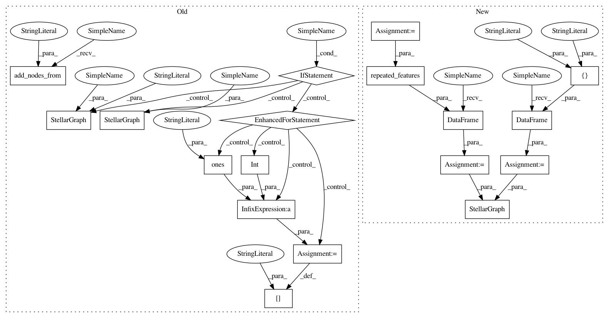

3db0f69797d05b8090e4f1c72e9428991e3f2ff0,tests/mapper/test_node_mappers.py,,example_hin_2,#Any#,55
Before Change
// Create isolated graphs
G = nx.Graph()
G.add_nodes_from(nodes_type_1, label="t1")
G.add_nodes_from(nodes_type_2, label="t2")
G.add_edges_from([(0, 4), (1, 4), (2, 5), (3, 5)], label="e1")
// Add example features
if feature_size_by_type is not None:
for v, vdata in G.nodes(data=True):
nt = vdata["label"]
vdata["feature"] = int(v) * np.ones(feature_size_by_type[nt], dtype="int")
G = StellarGraph(G, node_features="feature")
else:
G = StellarGraph(G)
return G, nodes_type_1, nodes_type_2
def example_hin_3(feature_size_by_type=None):
After Change
def example_hin_2(feature_size_by_type=None):
if feature_size_by_type is None:
feature_size_by_type = {"t1": None, "t2": None}
nodes_type_1 = [0, 1, 2, 3]
nodes_type_2 = [4, 5]
nodes = {
"t1": pd.DataFrame(
repeated_features(nodes_type_1, feature_size_by_type["t1"]),
index=nodes_type_1,
),
"t2": pd.DataFrame(
repeated_features(nodes_type_2, feature_size_by_type["t2"]),
index=nodes_type_2,
),
}
edges = {
"e1": pd.DataFrame(
[(0, 4), (1, 4), (2, 5), (3, 5)], columns=["source", "target"]
)
}
return StellarGraph(nodes, edges), nodes_type_1, nodes_type_2
def example_hin_3(feature_size_by_type=None):
In pattern: SUPERPATTERN
Frequency: 3
Non-data size: 18
Instances
Project Name: stellargraph/stellargraph
Commit Name: 3db0f69797d05b8090e4f1c72e9428991e3f2ff0
Time: 2020-03-04
Author: Huon.Wilson@data61.csiro.au
File Name: tests/mapper/test_node_mappers.py
Class Name:
Method Name: example_hin_2
Project Name: stellargraph/stellargraph
Commit Name: 3db0f69797d05b8090e4f1c72e9428991e3f2ff0
Time: 2020-03-04
Author: Huon.Wilson@data61.csiro.au
File Name: tests/mapper/test_node_mappers.py
Class Name:
Method Name: example_hin_2
Project Name: stellargraph/stellargraph
Commit Name: 3db0f69797d05b8090e4f1c72e9428991e3f2ff0
Time: 2020-03-04
Author: Huon.Wilson@data61.csiro.au
File Name: tests/mapper/test_node_mappers.py
Class Name:
Method Name: example_hin_3
Project Name: stellargraph/stellargraph
Commit Name: b17c639862ab1b9ab14e8c55a70e0ce002967e3f
Time: 2020-03-03
Author: Huon.Wilson@data61.csiro.au
File Name: tests/mapper/test_node_mappers.py
Class Name:
Method Name: example_graph_2